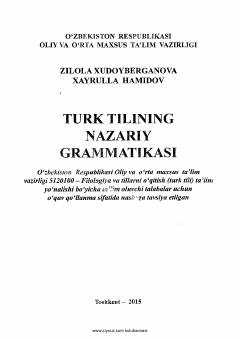

TTTurk tilining morfologiya va sintaksisiga bag'ishlangan oliy o'quv yurtlari uchun o'quv qo'llanma.
Ushbu o'quv qo'llanma oliy o'quv yurtlarining filologiya yo'nalishi talabalari uchun mo'ljallangan bo'lib, turk tilining morfologiya va sintaksisiga oid nazariy ma'lumotlarni qamrab olgan. Kitobda turk tilidagi so'z turkumlari, so'z birikmalari va gap turlari batafsil yoritilib, o'zbek tili grammatikasi bilan chog'ishtirib o'rganiladi. Shuningdek, qo'llanma bo'lajak mutaxassislar va tadqiqotchilar uchun ilmiy-metodik ko'mak vazifasini bajaradi.